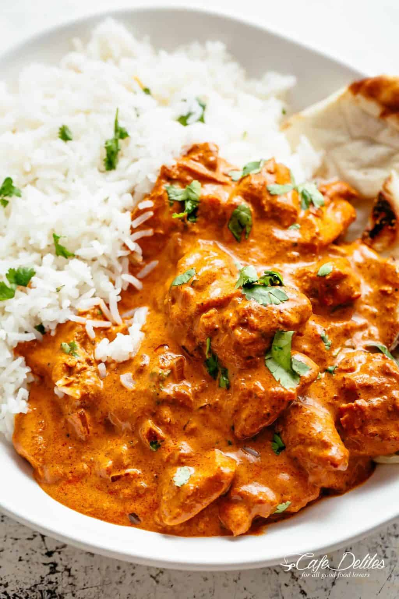

Chicken Tikka Masala

Original Recipe Source - Cafe Delites
Ingredients
For the Chicken Marinade
- 800g Boneless Chicken Thighs, Cut into Bite-sized Pieces
- 250ml Plain Yoghurt
- 16g Garlic Minced
- 1 tbsp Ginger
- 2 tsp Garam Masala
- 1 tsp Tumeric
- 1 tsp Ground Cumin
- 1 tsp Kasmiri Chili or 1/2 tsp Red Chilli Powder
- 1 tsp Salt
For the Sauce
- 2 tbsp Vegetable Oil
- 2 tbsp Butter
- 2 Small Onions or 1 Large Onion, Finely Diced
- 1.5 tbsp Garlic, Finely Grated
- 1 tbsp Ginger, Finely Grated
- 1.5 tsp Garam Masala
- 1.5 tsp Ground Cumin
- 1 tsp Turmeric Powder
- 1 tsp Ground Coriander
- 1 Can of Tomato Passata
- 1 tsp Kasmiri Chilli (optional)
- 1 tsp Red Chilli Powder (to taste)
- 1 tsp Salt
- 315ml Heavy Cream
- 1 tsp Brown Sugar
- Fresh Coriander to Garnish
Method
- In a bowl, combine chicken with all of the ingredients for the chicken marinade; let marinate for 10 minutes to an hour (or overnight if time allows).
- Heat oil in a large skillet or pot over medium-high heat. When sizzling, add chicken pieces in batches of two or three, making sure not to crowd the pan. Fry until browned for only 3 minutes on each side. Set aside and keep warm. (You will finish cooking the chicken in the sauce.).
- Melt the butter in the same pan. Fry the onions until soft (about 3 minutes) while scraping up any browned bits stuck on the bottom of the pan.
- Add garlic and ginger and sauté for 1 minute until fragrant, then add garam masala, cumin, turmeric and coriander. Fry for about 20 seconds until fragrant, while stirring occasionally.
- Pour in the tomato puree, chili powders and salt. Let simmer for about 10-15 minutes, stirring occasionally until sauce thickens and becomes a deep brown red colour.
- Stir the cream and sugar through the sauce. Add the chicken and its juices back into the pan and cook for an additional 8-10 minutes until chicken is cooked through and the sauce is thick and bubbling. Pour in water to thin out the sauce, if needed.
- Garnish with coriander and serve with hot garlic butter rice and fresh homemade Naan bread!